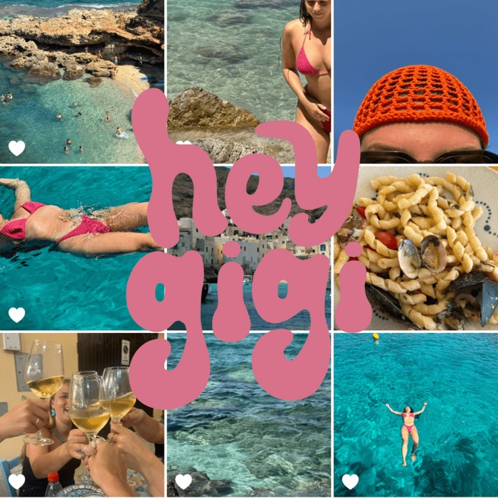

Hey Gigi
Building a handmade clothing brand from scratch — with the founder, across both strategy and creative.
- 0 → 1 brand build
- Full go-to-market
- Identity + social

Overview
Building a handmade clothing brand from scratch — with the founder, across both strategy and creative.
What I did
- Developed the full business plan — positioning, target audience, and go-to-market strategy.
- Shaped the brand identity and built a marketing plan to support awareness and growth.
- Designed and managed organic & paid media, building the brand's social presence from zero.
- Coordinated brand development — consistency across visual identity, content, and communication.
Later paused as the founder's focus shifted — but a project I'm proud of, reflecting my ability to build brands from the ground up.